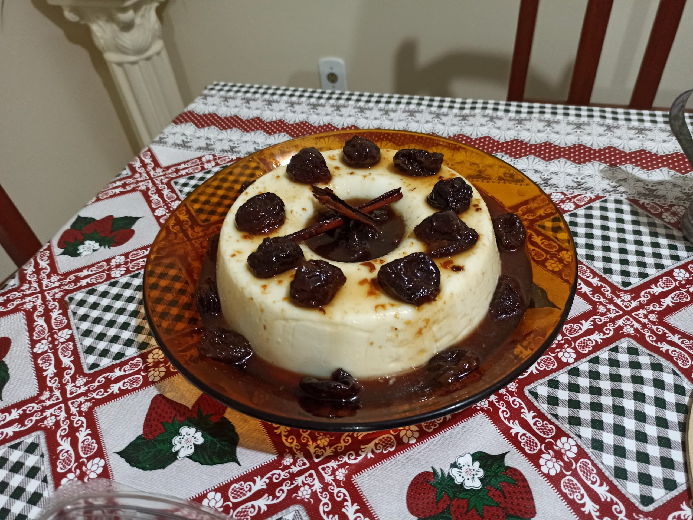

Home
Blancmange

Description
Blancmanjar is a dessert typically made with
milk or cream and sugar, thickened with gelatin or cornstarch.
It is commonly flavored with almonds.
In Brazil, the most popular version uses
coconut milk and syrupy red fruits, especially plums.
Ingredients for Blancmange
- 400 ml;
- 1 L of milk;
- 1 can of condensed milk;
- 1 cup (tea) of cornstarch;
- Oil for greasing the mold.
Steps
-
Grease a 22 cm (8.5 inch) round Bundt pan (with a center hole)
lightly with oil. If using a pan of a different shape,
make sure it holds approximately 1,750 ml (7 cups).
-
In a medium saucepan, combine the coconut milk, 3 cups of the milk,
and the sweetened condensed milk.Mix well using a whisk.
In a small bowl, dissolve the cornstarch in the remaining milk.
-
Place the saucepan over medium heat. When the mixture begins to boil,
reduce the heat to low and slowly add the cornstarch mixture,
stirring constantly with the whisk. Continue stirring for about 3 minutes,
until the mixture thickens into a creamy consistency
— pay attention to the texture: it should be thick enough to lightly hold
the marks of the whisk, but not too thick, or it may form lumps.
-
Turn off the heat and immediately pour the coconut cream into the greased pan.
Scrape the bottom of the pan well and smooth the surface with a silicone spatula.
Cover the surface of the cream directly with plastic wrap to prevent a thick
skin from forming. Let it cool at room temperature before refrigerating.
Meanwhile, prepare the prune syrup.
-
Once the pudding has cooled to room temperature, transfer it to the
fridge and chill for at least 3 hours, or overnight if preferred.
-
Remove the pan from the refrigerator and run the tip of a small
knife around the edge to loosen the pudding (or gently press
with your fingertips to release it from the sides). Place a serving
plate over the pan and invert it in one quick motion to unmold.
Serve immediately with the prune syrup.
Ingredients for Syrup
- 300 g dried prunes with pits (about 2c cups)
- 2½ cups water
- ¾ cup sugar
- 1 cinnamon stick
Steps
-
In a small saucepan, combine the water and sugar and stir until
the sugar dissolves. Add the prunes and place over medium heat.
-
Once it starts to boil, reduce the heat and let it simmer for
about 25 minutes, until a light syrup forms and the prunes are
soft. Add the cinnamon stick and cook for another 5 minutes
to infuse the syrup with flavor.
-
Transfer the syrup to a bowl or serving dish and let it cool
to room temperature before refrigerating.
Notes
-
If using pitted prunes, simmer for only 20 minutes after it
begins to boil, until the syrup is light and the prunes
are soft. The cooking time is shorter because pitted prunes
tend to break down and soften more quickly.
-
Try serving the coconut pudding with apricot
syrup or a sweet toasted coconut crumble.
-
Both the coconut pudding and the prune syrup can be prepared
in advance and stored in the refrigerator. Unmold the pudding
only on the day you plan to serve it to prevent it from
drying out. The pudding keeps for up to 5 days in the fridge.